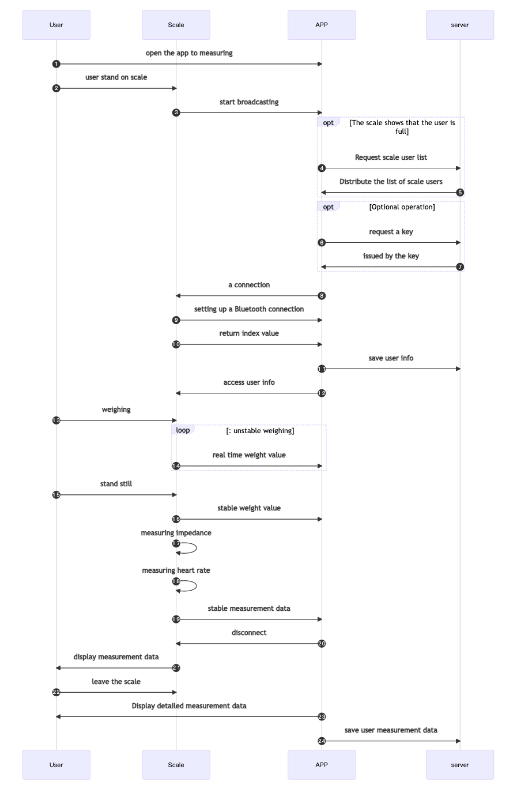
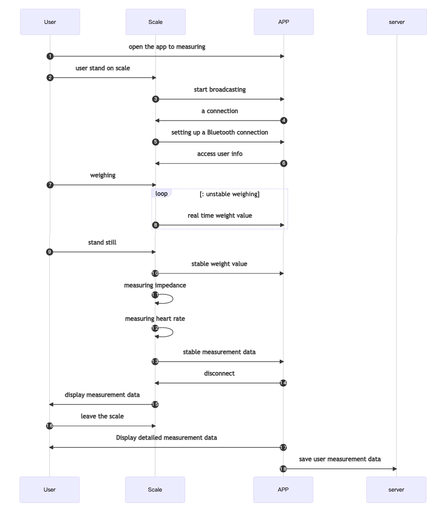
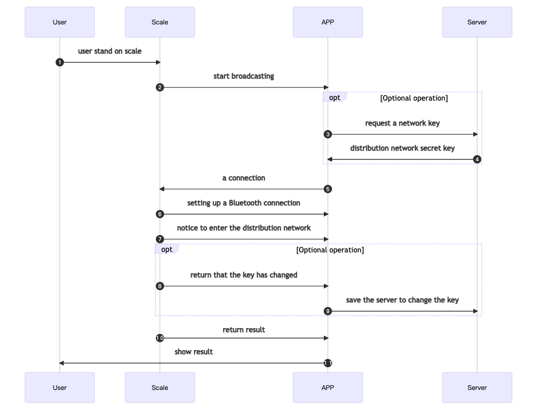
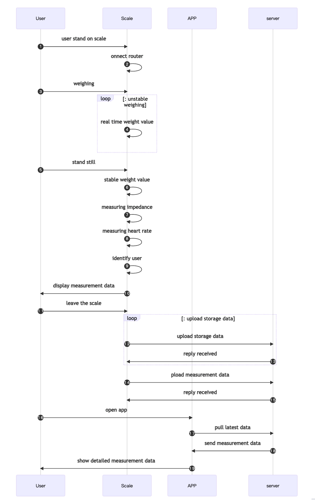
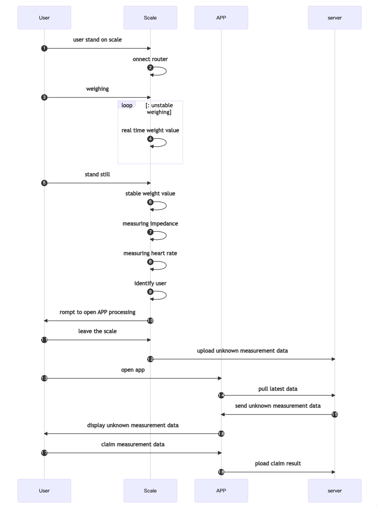

User Scale
The user scale is a smart device launched by our company that supports displaying the measurement results directly on the scale display. The user can register the scale end user. Even without app , the measurement data results can be directly displayed on the scale end ,which improves the user experience. User scales are divided into Bluetooth scales and Bluetooth WiFi dual-mode scales in terms of communication methods. In use, the working mode of the two devices in Bluetooth mode is the same. Compared with the Bluetooth model, the Bluetooth WiFi dual-mode scale will have more functions such as measurement in WiFi mode.
For the Bluetooth WiFi dual-mode scale, in addition to using the Bluetooth function, it needs to be connected to the SDK, and it also needs to cooperate with the server integration Docker.
Using Measurements Briefly
After the scale and the APP are connected through Bluetooth, the APP sends the basic information of the measurement user to the scale. When the measurement is completed, the scale will display the measurement results and upload the measurement data details to the APP.
At present, the user scale device can store up to 8 user information, and the user on the scale end needs to register the user with the device through a Bluetooth connection. Once 8 users has registered，the scale will return the status of registration failure if user is registered to the device again. Therefore, it is recommended that you release the list of registered users on the scale before registering users to avoid invalid users occupying resources.
1.When we register user on the device, the device will record the user's secret key (not required) if registration is successful and return to the user's unique serial number. Therefore, after registering the user successfully, the app needs to save the serial number returned by the device to the user. When updating user information through Bluetooth connection or user measuring through Bluetooth connection, it is necessary to use the user serial number to access the designated user on the scale . At the same time, the serial number is also used as the identification of which registered user the device uploads the measurement data to, and as a necessary condition for deleting the user.
registered user
The scale can cache the registered user information, identify which user the measurement data belongs to when the Bluetooth is not connected through the registered user information, and use the identified user information to obtain detailed measurement data
access user
When operating the scale, you need to access the registered user first, and only after the access is successful can you perform corresponding operations, such as modifying user information, connecting to Bluetooth for measurement, etc.
Guest Mode Measurements
The guest mode is a measurement method of a public channel provided by the scale. This method can be used directly without registering . In the guest mode , the user account is temporary. Its existence is from connection to disconnection. When the device is disconnected, the temporary user account will be destroyed .Besides,it can’t generate,receive and store data .
Device Protocol Brief
Aspects covered by the agreement:
- User
- Age
- Height
- Gender
- Measurement
- Measurement status
- Real-time weight
- Storing data
- Measurement data
- Distribution network
- WiFi name
- WiFi password
- Data upload address
- Distribution results
- Other
- Unit
The device involves many aspects, and the communication process between protocols and the enabling method are strictly required. Our company has packaged it into SDK for easy access.
Work process
Registered scale user measurement sequence diagram

Bluetooth Access User Measurement Timing Diagram

WiFi network distribution timing diagram

Normal measurement timing diagram in WiFi mode

Measurement timing diagram for unidentified users in WiFi mode

Implementation of specific access equipment
Initialize QNSDK
Use QNBleApi.initSdk to initialize QNSDK.
Set listener
1. Set the system Bluetooth in listening state
Set the system Bluetooth in listening state QNBleApi.setSysBleStateListener Bluetooth status of the mobile phone system.
2. Set scanning device in monitoring/listening state
Set scanning device in monitoring/listening state QNBleApi.setBleDeviceDiscoveryListener, to receive the information sent by the SDK and discover the device information.
3. Set up Bluetooth connection change monitoring
Set the Bluetooth connection change listener QNBleApi.setBleConnectionChangeListener to receive the device link status changes returned by the SDK.
4. Set up Bluetooth connection change monitoring
Set the measurement data listener QNBleApi.setDataListener to receive the measurement status and measurement data returned by the SDK.
android example:
QNBleApi mQNBleApi = QNBleApi.getInstance(this);
mQNBleApi.setBleDeviceDiscoveryListener(new QNBleDeviceDiscoveryListener() {
@Override
public void onDeviceDiscover(QNBleDevice qnBleDevice) {
// Scanned bluetooth device callback
}
@Override
public void onStartScan() {
//Start scan success callback
}
@Override
public void onStopScan() {
// Callback after stop scanning
}
@Override
public void onScanFail(int i) {
//scan fail callback
}
@Override
public void onBroadcastDeviceDiscover(QNBleBroadcastDevice qnBleBroadcastDevice) {
//Callback of broadcast scale equipment related information
}
@Override
public void onKitchenDeviceDiscover(QNBleKitchenDevice qnBleKitchenDevice) {
//Callback of kitchen scale equipment related information
}
});
mQNBleApi.setBleConnectionChangeListener(new QNBleConnectionChangeListener() {
@Override
public void onConnecting(QNBleDevice qnBleDevice) {
//The device is being connected, after calling the connected device, it will call back immediately
}
@Override
public void onConnected(QNBleDevice qnBleDevice) {
//The device is connected successfully
}
@Override
public void onServiceSearchComplete(QNBleDevice qnBleDevice) {
//The service search of the device is completed, and it will be called after onConnected under normal circumstances
}
@Override
public void onDisconnecting(QNBleDevice qnBleDevice) {
//The connection is being disconnected, when the disconnection is called, it will call back immediately
}
@Override
public void onDisconnected(QNBleDevice qnBleDevice) {
//Disconnect, callback after disconnection
}
@Override
public void onConnectError(QNBleDevice qnBleDevice, int i) {
//A connection error occurred, please refer to the attached table for the error code
}
});
mQNBleApi.setDataListener(new QNScaleDataListener() {
@Override
public void onGetUnsteadyWeight(QNBleDevice qnBleDevice, double v) {
//Real-time weight data callback
}
@Override
public void onGetScaleData(QNBleDevice qnBleDevice, QNScaleData qnScaleData) {
//Stable data callback
}
@Override
public void onGetStoredScale(QNBleDevice qnBleDevice, List<QNScaleStoreData> list) {
//store data callback
}
@Override
public void onGetElectric(QNBleDevice qnBleDevice, int i) {
//The battery percentage value callback of the charging model
}
@Override
public void onScaleStateChange(QNBleDevice qnBleDevice, int i) {
//Connection status callback during measurement
}
@Override
public void onScaleEventChange(QNBleDevice qnBleDevice, int i) {
//callback for scale event
}
});
iOS example:
//set proxy
QNBleApi *bleApi = [QNBleApi sharedBleApi];
bleApi.bleStateListener = self;
bleApi.discoveryListener = self;
bleApi.connectionChangeListener = self;
bleApi.dataListener = self;
//implement the proxy method
- (void)onBleSystemState:(QNBLEState)state {
//Callback for system bluetooth status
}
- (void)onStartScan {
// Callback when scanning starts
}
- (void)onDeviceDiscover:(QNBleDevice *)device {
// Callback when device is found
//You can judge whether the device needs to be connected after the callback device is sent
}
- (void)onStopScan {
// Callback when scanning is stopped
}
- (void)onConnecting:(QNBleDevice *)device {
// Callback being connected
}
- (void)onConnected:(QNBleDevice *)device {
// callback for successful connection
}
- (void)onDisconnected:(QNBleDevice *)device {
//device disconnect
}
- (void)registerUserComplete:(QNBleDevice *)device user:(QNUser *)user {
//The registered user successfully calls back the user information on the scale
//APP can obtain the index assigned to the user by the scale in this method, and save the user information on the scale
}
- (void)onGetUnsteadyWeight:(QNBleDevice *)device weight:(double)weight {
//Receive real-time data callback
}
- (void)onGetScaleData:(QNBleDevice *)device data:(QNScaleData *)scaleData {
//Receive stable data callback
}
- (void)onGetStoredScale:(QNBleDevice *)device data:(NSArray <QNScaleStoreData *> *)storedDataList {
//Receive the stored data callback
}
- (void)onScaleStateChange:(QNBleDevice *)device scaleState:(QNScaleState)state {
//scale connection or measurement state change callback
}
Start the scan
After confirming that Bluetooth is turned on, the Android side also needs to check the Location Permission and Location Switch. If you confirm that Bluetooth is turned on, the location permission is authorized, and the location service switch is turned on, you can start Bluetooth scanning
After Android 6.0, for apps with targetSdkVersion>=23 and above, Bluetooth scanning needs to obtain positioning permission. For details, see About The location service switch is not mandatory, but some mobile phones do not turn on this switch and cannot scan the device, which is related to the mobile phone system of each company
The iOS13 system has added Bluetooth access rights, you need to check whether you have access rights, and start scanning after confirming that it has been authorized and Bluetooth is turned on
The scan method is QNBleApi.startBleDeviceDiscovery, and the scanned device data will be called back in the scan interface set above QNBleDeviceDiscoveryListener.
In addition, some feature settings related to scanning can be set in QNConfig, and the content that needs to be set has been basically covered.
Usually APP will have a dedicated interface for measurement. We usually scan the Bluetooth after the interface is displayed, and stop scanning when the interface disappears.
android example:
QNBleApi.getInstance(context).startBleDeviceDiscovery(new QNResultCallback() {
@Override
public void onResult(int code, String msg) {
//This method does not return to the device, but indicates whether the scan was started successfully
if (code != CheckStatus.OK.getCode()) {
ToastMaker.show(ScanActivity.this,code+":"+msg);
}
}
});
iOS example:
//start scan
[[QNBleApi sharedBleApi] startBleDeviceDiscovery:^(NSError *error) {
//The callback here indicates whether the startup scan method is successful
if (error) {
NSLog([NSString stringWithFormat:@"Failed to start scan method, reason: %@",error]);
}
}];
Connect device access/registration measurement
1. Connect the device
After the APP receives the SDK callback device, it can judge whether it is a device that needs to be connected (this belongs to the business logic of the APP), and realize the connection device by calling the QNBleApi.connectUserScaleDevice method. .
When we connects a device, QNBleApi.connectUserScaleDevice passes the parameter QNUserScaleConfig.curUser.index , and the user index is greater than 0, it will be considered that this connection goes through the access measurement process When the user index is equal to 0, the SDK will consider that this connection needs to go through the registration measurement process. Of course, by setting QNUserScaleConfig.isVisitor, the SDK will consider this measurement as a visitor visit measurement, and the scale will not assign an index to the user to register the scale user. The transmitted user information is only valid for this measurement.
android example:
public void onDeviceDiscover(QNBleDevice qnBleDevice) {
// Scanned bluetooth device callback
QNUserScaleConfig mQNUserScaleConfig= new QNUserScaleConfig();
mQNUserScaleConfig.setCurUser(qnUser);
//mQNUserScaleConfig.setVisitor(true);
mQNBleApi.connectUserScaleDevice(mBleDevice,mQNUserScaleConfig,mCallback);
}
iOS example:
- (void)onDeviceDiscover:(QNBleDevice *)device {
// Callback when device is found
if (isConnect) {
QNUserScaleConfig *config = userConfig;
config.user.index = userIndex;
config.user.secret = userSecret;
//config.isVisitor = YSE;
[[QNBleApi sharedBleApi] connectUserScaleDevice:device config:config callback:^(NSError *error) {
}];
}
}
In addition, before calling the connection, you’d better to stop the previous scan (we found that some mobile phones have Bluetooth scanning and Bluetooth connection at the same time, which will reduce the failure rate of successful connection). After stopping scanning , delaying 200~500ms before calling the connection will increase the success rate of the connection. The method to stop Bluetooth scanning is: QNBleApi.stopBleDeviceDiscovery.
android example:
QNBleApi.getInstance(context).stopBleDeviceDiscovery(new QNResultCallback() {
@Override
public void onResult(int code, String msg) {
if (code == CheckStatus.OK.getCode()) {
isScanning = false;
}
}
});
iOS example:
[[QNBleApi sharedBleApi] stopBleDeviceDiscovery:^(NSError *error) {
//The callback here indicates whether the stop scanning method is successful
if (error) {
NSLog([NSString stringWithFormat:@"Failed to stop scanning method, reason: %@",error]);
}
}];
2. Measurement data
The data and status of the weighing process will be called back in the above-mentioned QNScaleDataListener
3. Measurement ends
After receiving stable data (that is, receiving QNScaleDataListener.onGetScaleData), the measurement is completed, and the device will automatically disconnect.
So far, the basic process of the device has been completed, and the APP can save the data and display the data by itself after receiving the stable data. Data standard judgment can be done in our way-SDK indicator standard description.
Bluetooth WiFi dual-mode scale configuration network
For the Bluetooth WiFi dual-mode scale, in addition to using the Bluetooth function, it needs to be connected to the SDK, and it also needs to cooperate with the server integration Docker.
1. Connect the device
After the APP receives the SDK callback device, it can determine whether to configure the device WiFi for the device that needs to be connected (this belongs to the business logic of the APP), by calling the QNBleApi.connectUserScaleDevice method to Implement connected devices to configure WiFi.
When connecting a device, when the parameter QNUserScaleConfig.wifiConfig passed by QNBleApi.connectUserScaleDevice is not nil, the SDK will consider this connection Need to go through the distribution network process. Where QNUserScaleConfig.dataUrl represents the server address for uploading measurement data in WiFi mode (usually the APP background address), QNUserScaleConfig.otaUrl represents the OTA firmware address in WiFi mode. android example:
public void onDeviceDiscover(QNBleDevice qnBleDevice) {
// Scanned bluetooth device callback
QNUserScaleConfig mQNUserScaleConfig= new QNUserScaleConfig();
QNWiFiConfig mWiFiConfig = new QNWiFiConfig();
mWiFiConfig.setSsid(wifiname);
mWiFiConfig.setPwd(password);
mWiFiConfig.setServeUrl("http://www.sample.com");
mQNUserScaleConfig.setWifiConfig(mWiFiConfig);
mQNUserScaleConfig.setOtaUrl("http://www.sample.com");
mQNBleApi.connectUserScaleDevice(mBleDevice,mQNUserScaleConfig,mCallback);
}
iOS example:
- (void)onDeviceDiscover:(QNBleDevice *)device {
// Callback when device is found
if (isConnect) {
QNUserScaleConfig *config = [[QNUserScaleConfig alloc] init];
config.wifiConfig = wifiConfig;
config.dataUrl = @"http://hostname:port/path/"; //Maximum length is 128 bytes
config.otaUrl = @"protocol://hostname[:port]/path/";//The maximum length is 128 bytes
[[QNBleApi sharedBleApi] connectUserScaleDevice:device config:config callback:^(NSError *error) {
}];
}
}
2. Monitor callback configuration network status
The network configuration state will be called back in QNScaleDataListener.onScaleStateChange:.
public void onScaleStateChange(QNBleDevice qnBleDevice, int i) {
//Connection status callback during measurement
switch(bleStatus) {
case QNScaleStatus.STATE_WIFI_BLE_START_NETWORK:
//Start distribution network
stateString = getResources().getString(R.string.start_set_wifi);
btnString = getResources().getString(R.string.disconnected);
break;
case QNScaleStatus.STATE_WIFI_BLE_NETWORK_FAIL:
// start failed
stateString = getResources().getString(R.string.failed_to_set_wifi);
btnString = getResources().getString(R.string.disconnected);
break;
case QNScaleStatus.STATE_WIFI_BLE_NETWORK_SUCCESS:
// start successfully
stateString = getResources().getString(R.string.success_to_set_wifi);
btnString = getResources().getString(R.string.disconnected);
break;
}
}
iOS example:
- (void)onScaleStateChange:(QNBleDevice *)device scaleState:(QNScaleState)state {
if (state == DeviceStyleWifiBleStartNetwork) {
//Start distribution network
}else if (state == DeviceStyleWifiBleNetworkSuccess){
//The network distribution is successful
}else if (state == DeviceStyleWifiBleNetworkFail){
// Failed to configure the network
}
}